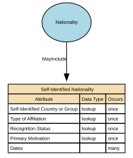

Self-Identified Nationality
Self‑Identified Nationality represents how an individual personally defines or expresses their own national identity, independent of citizenship, passport, or legal status. It reflects cultural affiliation, heritage, or personal identification, and is self‑reported, non‑authoritative, and used solely for demographic, engagement, or inclusion‑related purposes.
This attribute does not confer any legal rights or obligations.
Implements Concepts from Person Domain, Concept Model
| Concept | Description |
|---|---|
| Self-Identified Nationality | Self‑Identified Nationality represents how an individual personally defines or expresses their own national identity, independent of citizenship, passport, or legal status. It reflects cultural affiliation, heritage, or personal identification, and is self‑reported, non‑authoritative, and used solely for demographic, engagement, or inclusion‑related purposes. This attribute does not confer any legal rights or obligations. |

Attributes
| Attribute | Description | Data type | Occurs |
|---|---|---|---|
| Self-Identified Country or Group | Self‑Identified Country or Group represents the country, cultural group, territory, people, or national identity that an individual personally associates with, irrespective of legal citizenship or official nationality. It is self‑reported, non‑authoritative, and used exclusively for demographic insight, inclusion, and respectful identity handling. This attribute captures the label the individual uses for their own national or cultural identity, such as Scottish, Basque, Catalan, Hong Konger, Welsh, Kurdish, Sámi, Galician, Palestinian, Tamil, Bavarian, Inuit, or American. It is a personal identity expression, not a legal classification. | lookup | once |
| Type of Affiliation | Type of Affiliation describes the basis or nature of a person’s self‑identified national or group identity. It categorises how an individual relates to a self‑identified country, territory, cultural group, or people — whether through heritage, cultural identity, lived experience, belonging, community membership, or personal self‑identification. This attribute is self‑reported, non‑authoritative, and strictly for demographic insight, inclusion, and respectful representation — not for legal, operational, or compliance decisions. Values should be drawn from a controlled vocabulary rather than free text, to ensure consistency and interoperability. A specific value set is not mandated at this stage and will be defined through future governance and alignment. | lookup | once |
| Recognition Status | Recognition Status indicates how receiving organisations or systems may acknowledge, interpret, or display an individual’s self‑identified nationality, country, or group in operational systems or reporting. It captures organisational handling rules (e.g. approved, restricted, suppressed) applied to a self‑reported identity that has no legal standing but is relevant to inclusion, engagement, or user experience. Values should be drawn from a controlled vocabulary rather than free text, to ensure consistency and interoperability. This represents how the self‑identified value is handled in practice, not whether a state or international body formally recognises the group. | lookup | once |
| Primary Motivation | Primary Motivation describes the main reason or basis an individual chooses to self‑identify with a specific nationality, country, territory, cultural group, or people. It captures the personal rationale behind the identity — such as heritage, upbringing, cultural alignment, lived experience, or personal meaning — and is self‑reported, non‑authoritative, and used solely for identity expression, inclusion, and engagement insights. This attribute clarifies why the self‑identified nationality is meaningful to the individual. Values should be drawn from a controlled vocabulary rather than free text, to ensure consistency and interoperability | lookup | once |
| Dates | A self‑identified nationality is a statement made by the person about the nationality (or nationalities) they identify with. The date fields should describe the validity period of that self‑identification, not necessarily legal citizenship dates. Self‑Identified Nationality Start Date (Valid From) - The date the person first reports (or you first record) that they self‑identify with the specified nationality. Self‑Identified Nationality End Date (Valid To) - The date the person stops reporting (or you stop treating as current) that they self‑identify with the specified nationality. | structure | many |